Systematic Bible Study
We'll teach you to seeChristin all of Scripture
We train ministers of any Protestant church, free of charge, to lead people through the whole Bible, from Genesis to Revelation — so that Christ is seen in every lesson. Ready-made lessons, videos and a personal mentor.
- Guests
Do some people come for tea and fellowship for years and still not receive Christ?
- Believers
Do your members think people in the Old Testament were saved by works, not by Christ?
- Ministry team
Are your small-group leaders unable to answer people's questions, and do they wrestle with doubts themselves?
- Pastor
Do people bring the same questions to you rather than to Scripture?
- Children & teens
Do Sunday school lessons boil down to "obey your parents", and are the children tired of them?
- 390lesson notes with video
- 66books of the Bible in order
- 7years of lessons — the whole Bible in order
- 2000+years the church has read Scripture through Christ
1 · Sound familiar?
We have been there ourselves
For years we asked ourselves these questions in our own churches — until we started studying the Bible itself with our people, in order. If some of it sounds familiar, tick it: we will share what helped us.
GuestsUnbelievers and occasional visitors
BelieversFaith rests on a formula, not on the Word
Ministry teamTeaching others, but standing on nothing firm
PastorEverything lands on you
Children & teensMorals instead of Christ
0of 19
Tick what you recognise.
2 · The solution — a method
Systematic Bible Study
Every lesson works through the Bible itself, in order, from Genesis to Revelation. In every lesson we show Christ and the Gospel, teach how to share the faith and how to apply the Word to the life of faith today. Seminary depth in plain words.
Through Christ
Every lesson leads to Christ, and the Gospel is heard in every one. It is the Holy Spirit who opens it, so we study with prayer.
- Unbelievers
- meet Christ face to face in every lesson — and the question of whether to receive Him.
- Believers
- hear the Gospel lesson after lesson: faith grows stronger, the words stick, and they share it the same way at work, at school, at home.
- Gen. 3:15
- Isa. 53
- Rev. 5
John 5:39 · Luke 24:27 · Acts 10:43
Through God's covenants
The Old and New Testaments are one story: one God saves by one faith.
- Believers
- lose the fear of judgement and the "faith or works" confusion: they see how Abraham and David were saved — and how they are saved.
- Ministry team
- gains confidence: they calmly explain hard Old Testament passages and answer people's difficult questions.
- Eden
- The promise
- Law and Tabernacle
- New covenant
Gen. 3:15 · Gal. 3:8 · Luke 22:20
Through the history of redemption
The whole Bible in order: Creation — Fall — Restoration in Christ.
- Ministry team
- learns to interpret any passage on their own and gets a ready system to pass on to their people.
- Pastor
- no longer has to hunt for a topic every week: you go through the text, and the church hears the whole Bible.
- Creation
- Fall
- Restoration
Gen. 1–3 · Luke 24:25-27 · Acts 7
The Church's ancient path, in lesson form
This is no modern invention. Seeing Christ and the history of redemption in all of Scripture was taught by Christ and the apostles, the church fathers and the Reformers, each in their own time and words. We have simply gathered that path into clear lessons with notes and videos.


Through the text in order
We don't pick a topic: we read and explain the Bible chapter by chapter.
Neh. 8:8
John Chrysostom, Augustine, Zwingli, Calvin

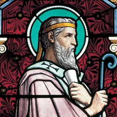
Christ in every lesson
The Old Testament is about Christ too — the Lord Himself taught so, and the fathers saw in it the types of Christ.
John 5:39 · 1 Pet. 1:10-11 · Acts 10:43 · 2 Cor. 3:14
Christ-centred (typological) reading
Melito, Irenaeus, Augustine
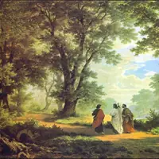

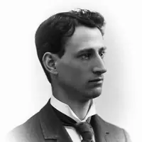
The Gospel and evangelism
From creation to Christ in one story — this is how Stephen and the apostles preached. This story, epoch by epoch, was later studied by biblical theology.
Luke 24:25-27 · Acts 7:2-53 · Heb. 11
Geerhardus Vos's biblical theology
Geerhardus Vos
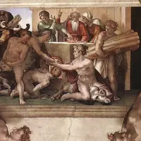
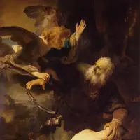
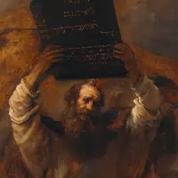
The life of faith today
God leads His people by covenants — Noah and Abraham, and us too: we apply these stories of faith to our own lives.
Gen. 15 · Jer. 31:31 · Luke 22:20
O. Palmer Robertson, Meredith Kline
How the method works
Your ministry team studies the lessons
Using our recorded videos and lesson notes, praying that the Holy Spirit would open the Word.
We help them prepare
A mentor goes through the lessons with each of them one to one, in English, and answers their questions. Free of charge, online. Your pastor still leads the ministry team: we only provide the training.
They teach in your church
In whatever way your pastor decides. For example:
- Every other Sunday — these lessons, following the Bible text. On the other Sundays — your own sermons, as now.
- A separate weekday when your ministry team teaches the Bible from the lessons.
- Members watch the lesson recordings on their own and discuss them in small groups with the ministry team, who correct and answer questions.
The fruit
- Unbelievers meet Christ face to face.
- Believers gain confidence and share the Gospel.
- The ministry team gains depth and answers questions with ease.
- The pastor gets a strong congregation where believers grow into ministers.
And you keep what is yours: your vision, your liturgy, the character of your church. We rejoice with you in Christ as your church discovers the depth and power of Scripture.
We join two worlds: seminary depth in words a child or a grandparent can follow.
Seminary depth that never reaches the church
Three examples: how the passage is usually read, and what the text really shows. Flip the card.
3 · Comparison
How the method differs from others
We tried many other approaches in our churches and settled on one: studying the Bible itself, in order. The difference is not in the details but in the aim — like a swimming pool and the Bosphorus.
Courses and topical programmes are like dropping into the pool now and then for a relaxing swim: pleasant and useful, but you never get far.
Studying the Bible in order is like training on purpose to swim across the Bosphorus: stroke by stroke, from Genesis to Revelation, all the way to the other shore.
We respect many programmes and have learned from them ourselves. On the left — what they do well and what they lack; on the right — how we try to keep the strengths and fill the gaps.
Inductive Bible study
Good tactics without strategy. We offer both tactics and strategy.
What they do well — we keep it too
- Teaches people to read the text itself, not opinions about it.
- Slow, careful attention to the details of a passage.
- Gets the group talking.
- A passage is studied apart from the whole history of salvation.Every passage stands in its place from Genesis to Revelation.
- Christ is rarely seen in the Old Testament, and application slides into morals: "be like David".We show Christ through all of Scripture — and study the passage just as closely, verse by verse.
- Conclusions depend on the leader's level.Leaders prepare from the notes and with a mentor, so conclusions rest on the text.
Alpha, basics courses and catechesis
A good way into faith. But a short course in the basics is not yet a foundation.
What they do well — we keep it too
- Simple, accessible, hospitable.
- Gives the basics of faith quickly.
- Good for a first encounter.
- Faith rests on a simplified scheme rather than on the Bible text.Deep study of Scripture itself — a firm foundation.
- The Old Testament is barely touched: "how were people saved in the OT?" stays unanswered.Understanding all of Scripture, especially the Old Testament, through Christ.
- The course ends after a few weeks — and there is nowhere further to grow.A path for years: from Genesis to Revelation, with a mentor.
Bible schools and colleges
They are systematic, but often with topical schemes rather than Scripture in order.
What they do well — we keep it too
- A curriculum, teachers, a theological base.
- Covers all the main doctrines.
- Topics are imposed on the text: verses are gathered under a thesis and the book's context is lost.System comes from the order of Scripture itself: doctrines grow out of the text as you read.
- Complex academic language.Seminary depth in plain words.
- It takes time, money and moving away — the knowledge never reaches the congregation.Free and close at hand: in your church or online. Every student teaches others (2 Tim. 2:2).
Topical preaching "across the Bible"
It opens up a topic well, but it is hard on the pastor and open to imbalance.
What they do well — we keep it too
- Explains one topic and the basics of faith clearly.
- Useful for festivals and special needs.
- Every week the pastor has to come up with a topic.You simply go through the text: next Sunday's topic is already set.
- Verses from different books are gathered under a topic: it is easy to read your own ideas into them.The text itself keeps you from inventions: everything is read, including the awkward passages.
- Imbalance: years about tithing, about works or about the mystical.Over the cycle the church hears the whole Bible — as Chrysostom, Augustine, Zwingli and Calvin preached.
Short evangelistic messages
"The Way of Salvation", "The Cross", "10 Letters" — messages of the Darakbang movement. In places they are good evangelistic material, but many denominations have declared the movement itself heretical.
What they do well — we keep it too
- Short and clear about the heart of the Gospel.
- A good first step for an unbeliever.
- Teach every member to share their faith.
- They give an entry point, but no depth for the life of faith.The whole Bible is one Gospel, so depth and evangelism go together.
- The ministry team does not grow into teachers.The ministry team grows: they retell and explain every lesson themselves.
- Confidence rests on a memorised message.Ordinary believers share the Gospel confidently in their own words, standing on the text.
Overview video courses and "Bible in a year"
A great overview, but watching and reading is not yet understanding and teaching.
What they do well — we keep it too
- You see the whole Bible at once.
- Beautiful and accessible.
- The discipline of daily reading.
- An overview instead of working through passages.The same big picture plus a study of every passage.
- Passive watching with no mentor.A video and notes for every lesson, and a weekly call with a mentor.
- The Old Testament has been read, but stays obscure.Every book is opened up through Christ.
"Prosperity" and "power" courses
Faith that the Word is effective, but the Bible is read selectively.
What they do well — we keep it too
- Expectation that God will act.
- Faith in the power of the Word.
- They read the promises of success and healing, while Job, Lamentations, the cross and suffering drop out.We read the whole Bible, including Job and Lamentations, so faith holds up in suffering.
- Salvation quietly blends with success and works.We clearly tell religion from the Gospel: salvation is a gift in Christ.
Jehovah's Witnesses
They also offer home "Bible study". But it is not Christianity.
This is not Christianity
- They deny the Trinity and the deity of Jesus Christ: to them Christ is the created archangel Michael.
- The Holy Spirit to them is an impersonal force, not God.
- They use their own New World Translation, in which key verses are altered — for example, John 1:1.
- Their teaching is built on the organisation's literature rather than on open reading of Scripture.
We
- We are the Protestant "Covenant of Christ" churches; our ministers are named on this site.
- We confess the Trinity and the Nicene Creed, shared by all Christians.
- We teach from the Synodal translation in Russian and from the KJV, BSB and WEB in English, and test interpretation by Scripture itself.
Sources: Jehovah's Witnesses — Wikipedia · Beliefs — Wikipedia · The organisation's own site: jw.org
Shincheonji ("New Heaven, New Earth")
It goes around churches disguised as free Bible courses. But it is not Christianity.
This is not Christianity
- Its founder Lee Man-hee is revered as the "promised pastor", immortal and the only one who rightly interprets Revelation.
- It teaches that only 144,000 people will be saved — members of the organisation.
- It treats the Bible as a system of secret "parables" to which only Lee has the key.
- It recruits covertly through "free Bible courses" without saying who it is. Korea's largest Protestant churches have declared its teaching heretical (1995–2005).
We
- We say who we are from the start: the "Covenant of Christ" church; our pastors are named in Contacts.
- We teach people to read the open text of the Bible, with no "secret key" and no new prophet. The one Mediator is Christ (1 Tim. 2:5).
- We draw no one away and ask for nothing: people grow stronger in their own church.
Sources: Denominational rulings (Korean) · Yonhap (Korean) · Shincheonji — Wikipedia
4 · Testimonies
What believers and pastors say
We are now recording interviews with believers, ministers and pastors who study with these lessons. They will appear here soon.
5 · First step
Begin systematic Bible study with a single lesson
And the things that thou hast heard of me among many witnesses, the same commit thou to faithful men, who shall be able to teach others also.
2 Tim. 2:2
Watch the first lesson
Gen. 1–3: Creation, Fall, Restoration. The key to the whole Bible.
See all the lessons
Notes from Genesis to Revelation and recordings of the lessons.
Get in touch
Tell us about your church — let's talk about training and a trial lesson.
Message us on Telegramchrist.covenant.spb@gmail.comAll contacts
6 · Nothing new
History of the method
Studying all of Scripture and seeing Christ in it is nothing new — it is how God's people have always learned.
the patriarchs From Eden to Moses
The Gospel passes from parents to children; sacrifices point to the coming Christ.
- Adam
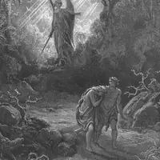
The first Gospel — right after the Fall.
Read more
God promises the Seed of the woman who will crush the serpent, and Himself clothes the people in coats of skins: the first sacrifice for sin. His sons already bring offerings to the Lord.
Gen. 3:15, 21 · 4:1-5
- Abel
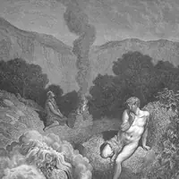
A sacrifice by faith: blood, not the work of his own hands.
Read more
Abel brings the firstlings of his flock, and Scripture calls it faith. Cain brings the fruit of the ground — his own effort. With Abel's blood Christ begins the reckoning of the prophets' blood.
Gen. 4:4 · Heb. 11:4 · 1 John 3:12 · Luke 11:49-51
- Enoch and Noah
Preachers of righteousness.
Read more
Enoch prophesies the coming of the Lord. Noah preaches righteousness and after the flood offers a sacrifice; in the covenant with Noah God promises to preserve the earth until the promise of the Seed is fulfilled.
Jude 14-15 · 2 Pet. 2:5 · Gen. 8:20 · 9
- Abraham
"God will provide himself a lamb": Abraham saw Christ's day.
Read more
God chose Abraham so that he would command his children to keep the way of the Lord. On Moriah Isaac is a type of Christ. Paul writes that Abraham had the Gospel preached to him beforehand.
Gen. 18:19 · 22:8, 18 · John 8:56 · Gal. 3:8, 16
- Jacob
A prophecy of Shiloh from the tribe of Judah.
Read more
Each generation receives the same covenant; Joseph gives orders to carry his bones into the promised land.
Gen. 49:10 · 50:24-25 · Heb. 11:20-22
- Job

"I know that my redeemer liveth."
Read more
Job offers sacrifices for his children and, at the end, for his friends; he waits for the Redeemer and the resurrection.
Job 1:5 · 19:25-27 · 42:8
- Adam
c. 15th century — 586 BC From Moses to the exile
Levites and families teach the law; the tabernacle and sacrifices point to Christ.
- Sinai
The Gospel comes before the law; the law leads to the sacrifice.
Read more
The law is a mirror and a schoolmaster to bring us to Christ, not a ladder to salvation. The law explains the problem; the tabernacle is the answer.
Exod. 20 · 25 · Gal. 3:15-24
- Home

The law was given so that parents would teach their children every day.
Read more
"Thou shalt teach them diligently unto thy children, and shalt talk of them when thou sittest in thine house." The Passover is a lesson for children: "What mean ye by this service?"
Deut. 6:6-7, 20-25 · Exod. 12:26-27
- Tabernacle

A copy and shadow of heavenly things: the service points to Christ.
Read more
High priest, sacrifices, cleansing and feasts — Leviticus speaks of Christ in almost every chapter.
Exod. 25:9, 40 · Heb. 8:5 · 9-10
- Levites

Priests and Levites teach Israel the law.
Read more
Every seven years the law is read aloud to all the people, children and strangers included.
Lev. 10:11 · Deut. 33:10 · 31:10-13 · Mal. 2:7
- 11th–9th c. BC
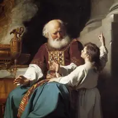
Samuel and the schools of the prophets.
Read more
Communities of "the sons of the prophets" at Ramah, Bethel, Jericho and Gilgal learn the Word and ministry under Samuel, Elijah and Elisha.
1 Sam. 19:20 · 2 Kgs 2:3-5 · 4:38 · 6:1
- c. 1000

David prophesies Christ's resurrection.
Read more
God promises David an everlasting throne for his Descendant; on Pentecost Peter reads Ps. 16 as a prophecy of the resurrection.
2 Sam. 7:12-16 · Ps. 16:10 · 110:1 · Acts 2:30-31
- c. 870

Jehoshaphat sends teachers through the cities with the book of the law.
Read more
Princes, Levites and priests went through the cities of Judah and taught the people the law of the Lord.
2 Chr. 17:7-9
- c. 740

Isaiah sees the Suffering Servant.
Read more
The prophets searched what time the Spirit of Christ in them was pointing to.
Isa. 7:14 · 9:6 · 53 · 1 Pet. 1:10-11
- 622
Josiah finds the book of the law — and the people revive.
Read more
The book that was found is read to all the people, and the covenant is renewed.
2 Kgs 22-23
- Sinai
586 BC — 1st century From the exile to Christ
Synagogues, scribes and prophets: Scripture is read and explained every Sabbath.
- 539

Without the temple, faith rests on Scripture.
Read more
In Babylon Daniel, reading Jeremiah, understands the times and receives the prophecy of the Messiah.
Dan. 9:2, 25-26
- c. 444

Ezra "read in the book… distinctly, and gave the sense".
Read more
Ezra came to Jerusalem in 458 and set his heart to study the law, to do it and to teach it. At Nehemiah's time he reads the law to the whole people, and the Levites explain what was read — a forerunner of expository preaching.
Ezra 7:10 · Neh. 8:1-8
- c. 430
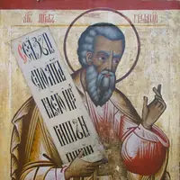
Malachi — the last prophet of the Old Testament.
Read more
He promises the messenger of the covenant and the prophet Elijah; Christ will show that this is John the Baptist.
Mal. 3:1 · 4:5-6 · Matt. 11:10-14
- 3rd–1st c. BC

The Septuagint: Scripture in Greek.
Read more
In the 3rd century BC the Pentateuch was translated in Alexandria for Greek-speaking Jews; the other books followed by the 1st century BC. The apostles quote it most often.
- 1st century

Moses is read in the synagogues every Sabbath.
Read more
The faithful remnant — Zacharias, Mary, Simeon, Anna — recognise Christ by the promises.
Acts 15:21 · Luke 2:25-38 · 4:16-21
- 539
AD 30 — 100 The apostolic church
The apostles teach Christ from the Old Testament — even to the Gentiles.
- 30
The risen Christ expounds "all the scriptures" about Himself.
Read more
"Beginning at Moses and all the prophets, he expounded unto them in all the scriptures the things concerning himself." This is the starting point of our method.
Luke 24:25-27, 44-47 · John 5:39, 46
- c. 34
Stephen tells the whole story from Abraham to Christ.
Read more
A deacon knows Scripture so well that he retells it from beginning to end: a model of reading straight through.
Acts 7:2-53
- c. 35

Philip begins at Isaiah 53; Peter tells Cornelius, "To him give all the prophets witness."
Read more
The Old Testament is preached to Gentiles from the very first day.
Acts 8:35 · 10:43
- 47–60

Paul preaches Christ through the history of Israel.
Read more
For three sabbath days he "reasoned with them out of the scriptures"; the Bereans search the Scriptures daily to test the preaching; in Athens he begins from Creation.
Acts 13:16-41 · 17:2-3, 11, 24-31 · 28:23
- 50–90

The epistles teach from Old Testament stories.
Read more
Adam, Cain and Abel, Noah, Abraham, Sarah and Hagar, the wilderness, Melchizedek, Esau, Balaam, Job, Elijah — "whatsoever things were written aforetime were written for our learning".
Rom. 4 · 15:4 · 1 Cor. 10:1-11 · 2 Cor. 3:14 · Gal. 3-4 · Heb. 11 · 1 Pet. 1:10-11
- 30
2nd — 15th centuries Church fathers and the Middle Ages
The fathers preach through the text — but Scripture grows out of reach for ordinary believers.
- c. 144
The church rejects Marcion and his "cruel God of the Old Testament".
Read more
The same mistake people make today: "a cruel God in the OT, a God of love in the NT".
- c. 165
Melito, "On Pascha": the lamb of the Exodus is Christ.
- c. 180
Irenaeus: one God in both Testaments; all of history is gathered up in Christ.
Read more
"Against Heresies" and "The Demonstration of the Apostolic Preaching" — the first outline of the whole history of salvation.
- 3rd century

Origen writes commentaries on almost the whole Bible.
Read more
He preached through books in order. But he often turned to allegory, and some of his teachings were condemned by the church in 553.
- 325 · 381
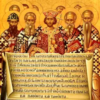
The Nicene Creed.
Read more
Christ "begotten of the Father before all worlds"; the doctrine of the Trinity that we also confess.
- c. 360

Ephrem the Syrian teaches Scripture in hymns.
Read more
Commentaries on Genesis and Exodus.
- after 380
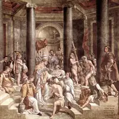
The other side of recognition: many are baptised without conversion.
Read more
Once Christianity became the faith of the empire, it grew harder for pastors to bring everyone to know Scripture. Chrysostom, Augustine and other fathers preached against just this.
- 386–404
John Chrysostom preaches through whole books in order.
Read more
Homilies on Genesis, Matthew, John and Paul's letters; he urged lay people to read the Bible at home.
- c. 419
Augustine: "The New is in the Old concealed; the Old is in the New revealed."
Read more
He writes so in "Questions on the Heptateuch" (II, 73). Sermons through books; "The City of God" — the story of two cities from Cain and Abel.
- c. 420

Cyril of Alexandria: Christ in the Pentateuch.
- Middle Ages
In the East Scripture is heard in Greek, Syriac and Slavonic.
Read more
In the 9th century Cyril and Methodius translate Scripture and the liturgy into Slavonic. In the West Scripture stays in Latin, understood by fewer and fewer, and the local Synod of Toulouse (1229) forbids lay people to keep books of the Bible.
- 1170–1382

The light: the Waldensians and Wycliffe give the Word back to the people.
Read more
The Waldensians translate Scripture into the vernacular (c. 1170), Wycliffe into English (c. 1382); the Brethren of the Common Life read and copy books.
- 1415
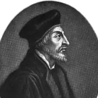
Jan Hus sets Scripture above church authorities — and goes to the stake.
Read more
The Prague preacher taught the people in Czech. The Council of Constance condemned him for Wycliffe's views on the church and papal power; Hus refused to recant.
- c. 144
16th century The Reformation
Scripture returns to the people: translations, commentaries, catechisms.
- 1517

Luther: 95 theses against indulgences.
Read more
The Reformation begins with a question about repentance; later its heart is summed up as "Scripture alone, faith alone". Luther's postils — sermons on the Sunday readings — taught whole countries its basics.
- 1519
Zwingli preaches through Matthew in order, from the first verse.
Read more
He sets aside the lectionary for continuous reading. From 1525 Zurich holds the "Prophezei": daily study of Scripture for pastors.
- 1522–1534

Luther's German Bible; Tyndale's English one.
Read more
Tyndale promised: "I will cause a boy that driveth the plough shall know more of the Scripture than thou dost." He translated the New Testament, the Pentateuch and part of the Old; in 1536 he was executed.
- 1536–1559
Calvin's "Institutes" — a guide to Scripture for ordinary ministers.
Read more
Commentaries on almost every book of the Bible and preaching through books in order; back in Geneva he resumed at the very verse where he had stopped.
- 1563

The Heidelberg Catechism — faith for children and adults.
- 1517
17th — 20th centuries Protestant theologians and ministries
Covenant and biblical theology, Bible study in homes — in the Russian Empire too.
- 1646–1647
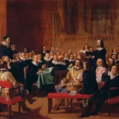
The Westminster Confession: covenant theology.
Read more
The Puritans preach through books; every family reads Scripture at home.
- 1708–1714
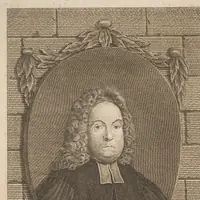
Matthew Henry's commentary — for ordinary believers.
Read more
By his death in 1714 Henry had reached Acts; other ministers completed the epistles and Revelation.
- 1854–1892
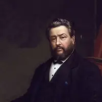
Spurgeon: from any text, a road to Christ.
- 1860s
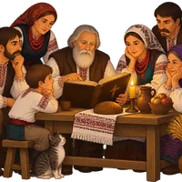
The Stundists: peasants gather for hours of Bible reading in southern Russia.
- 1874
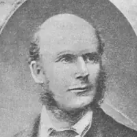
Lord Radstock and Pashkov: Bible readings and study in St Petersburg.
Read more
In 1876 Pashkov founds the Society for the Encouragement of Spiritual and Ethical Reading.
- 1876
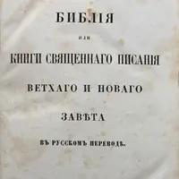
The Synodal Bible: all of Scripture in Russian — for everyone.
- 1948
Geerhardus Vos, "Biblical Theology".
Read more
Revelation unfolds in time, from epoch to epoch: the redemptive-historical method.
- 1980
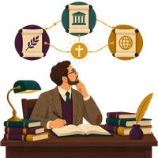
O. Palmer Robertson, "The Christ of the Covenants".
Read more
The whole Bible is one history of covenants fulfilled in Christ. Meredith Kline wrote on the covenants and the structure of Scripture.
- 1646–1647
1980 — today Depth in plain words
Books and lessons for ordinary believers from which our method grew.
- 1981

Graeme Goldsworthy, "Gospel and Kingdom".
Read more
Biblical theology for ordinary believers.
- 2002–2007
Vaughan Roberts's "God's Big Picture" and "The Jesus Storybook Bible" for children.
Read more
The first is an introduction to biblical theology for adults; the second is a children's Bible in which "every story whispers His name".
- 2006
Leif Nummela, "The Scarlet Thread of the Bible".
Read more
A Finnish pastor: all of Scripture, from beginning to end, is about Christ. Published in Russian in 2011.
- since 2007
Systematic Bible Study in plain words.
Read more
Baptist, Methodist and Reformed teachers put together the lessons we learn from and teach to others. Since 2007 pastor Stanislav Rybko has trained more than 30 pastors with them.
- 1981
7 · Questions
Frequently asked questions
Terms
Does it cost anything?
No. The training, the materials and the trial lesson are free.
Do we have to join your church, union or movement?
No. We draw no one away: our aim is for people to grow stronger in their own church.
Who are you?
We are the Protestant Reformed church "Covenant of Christ", St Petersburg; our pastor is Ivan Gursky. Ministers of other congregations teach with us; their names and ministries are in Contacts.
Why are you doing this?
We are ministers of different Protestant churches ourselves, and we saw in our own congregations the problems described above. We want to bring the depth of Scripture into the life of faith of ordinary believers and to make life easier for ministers and pastors. We do it for Christ's sake.
Is there a hidden agenda — money or recruitment?
No. We say who we are from the start and ask for nothing in return. We have no aim of bringing you into our denomination, taking money from you or drawing away your members or ministers. We do not preach strange teachings like Shincheonji's, and we do not think of ourselves as the only true believers in the world: Christ's Church is bigger than any fellowship, ours included. One thing matters to us: that the people in your church know Scripture and grow strong in Christ.
Theology
What do you believe?
We are the Protestant Reformed church "Covenant of Christ", St Petersburg. We confess the Trinity, the Nicene Creed and the principles of the Reformation: Scripture alone, faith alone, grace alone, Christ alone. The lessons rest on covenant (Reformed) theology: God leads His people by covenants, all fulfilled in Christ (lesson on the covenants).
What do you teach about baptism and the gifts of the Spirit?
Water baptism is a visible witness to the covenant with God, received by faith, consciously, once in a lifetime (lesson on baptism). Every believer has the Holy Spirit; baptism in the Spirit is power to bear witness to Christ (Old and New Testament, on the Holy Spirit). The gifts of the Spirit, tongues and prophecy included, are given for service and edification and are tested by the Word (1 Cor. 12, 1 Cor. 14).
We are Baptists (Pentecostals, Lutherans…). Will it work for us?
We think so: the lessons teach people to read the text of the Bible itself. But we do not hide our views on baptism and the gifts — see the lessons above. Where your church thinks differently, your pastor decides; in the training we discuss such passages openly.
How are you different from groups that also "study the Bible"?
We confess the Trinity, teach from the open text, hide nothing and draw no one away. See the comparison above.
In practice
Do we need to change our liturgy, music or church structure?
No. All of that stays yours.
How does it fit with Sunday school, small groups and courses?
The lessons fit into what you already have: preaching, Bible school, small groups, Sunday school. You can start with one group of leaders.
How much time does it take?
For a student, a video and a call of about 1.5–2 hours a week. The full cycle from Genesis to Revelation takes about seven years; an intensive on Genesis, a few months.
Who will teach?
Your ministry team, under your pastor's leadership. We only prepare them online, and they serve in their own church. If your pastor asks, our ministers can visit for a few weeks, but our aim is to support you, not to serve in your place.
Online or in person?
Whichever suits you: calls online; we can hold the trial lesson at your church.
Is it suitable for children and teenagers?
Yes: the lessons have been tested with children, older people and people with no theological training. We are also preparing a separate version of the lessons for children, with games, pictures and an approach suited to their age.
Materials
Where can I see the lessons?
The notes are on this site; the English recordings are on our YouTube channel, marked with the 🇬🇧 flag.
What language are they in?
We can train your ministry team in English, and there are English recordings and lesson notes. The notes on this site are machine-translated from Russian, with Bible quotations from English translations (KJV, BSB, WEB). The lessons are also on video in other languages:
- English: Genesis, Exodus – Joshua, Judges – Solomon, Revelation
- German: Genesis, Exodus – Joshua, Judges – Solomon, Revelation
- French: Genesis, Exodus – Joshua, Judges – Solomon, Revelation
- Romanian: Genesis, Exodus – Joshua, Judges – Solomon, Revelation
- Ukrainian: Genesis, Exodus, Leviticus, Numbers, Deuteronomy, Feasts
To get the lesson notes in these languages, contact us.
Can we teach from the materials without you?
Yes, all the materials are open: use them. The training simply helps you prepare: the notes are like a textbook, and even with a textbook a teacher needs preparation. In the training we answer questions and work through the disputed passages of Scripture.